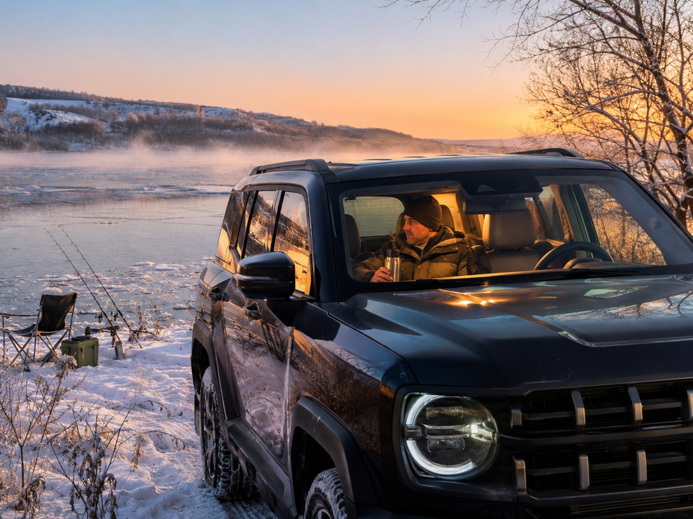
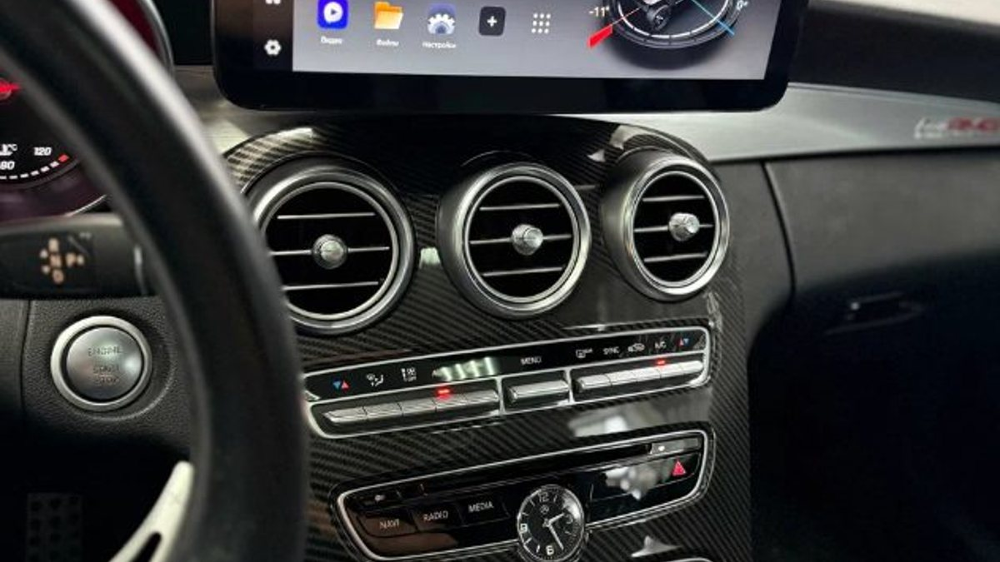
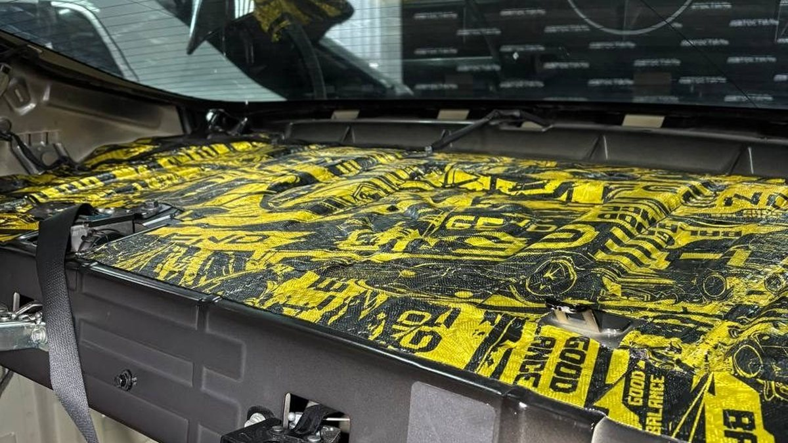

Пять утра, берег Рыбинского водохранилища. Над водой туман, на стёклах иней. Вы приехали затемно, до клёва ещё час, и сидеть всё это время с заведённым мотором не хочется: жалко топлива, да и выхлоп под окнами палаток соседям не понравится. Тут и вспоминают про автономку – маленькую печку, которая греет салон при заглушенном двигателе и тихо стрекочет топливным насосом.
Автономный отопитель в легковую машину нужен тем, кто подолгу сидит в стоящей машине: рыбакам, охотникам, тем, кто ждёт ребёнка с тренировки или работает из машины. Для утреннего прогрева мотора он не годится, у него другая задача. А дешёвые китайские комплекты популярны, но часто выдают ошибки, и почти всегда причина не в «китайском железе», а в топливе, питании и монтаже.

Воздушный автономный дизельный отопитель – это небольшая печь с собственной камерой сгорания. Внутри у неё несколько узлов, и почти каждая ошибка связана с одним из них.
- Дозирующий топливный насос. Подаёт топливо маленькими порциями. Его щелчки вы и слышите в салоне.
- Свеча накаливания. Раскаляется при старте и поджигает топливо в камере. После розжига отключается.
- Камера сгорания и теплообменник. Топливо горит внутри, а снаружи корпус обдувается воздухом салона. Продукты сгорания в салон не попадают: они уходят по отдельной выхлопной трубе под машину.
- Два вентилятора в одном моторе. Один подаёт воздух на горение (забор снаружи), второй гонит тёплый воздух в салон.
- Блок управления и датчики. Следят за температурой, пламенем и напряжением питания. Если что-то вышло за пределы, отопитель гасится и показывает код ошибки на пульте.
Для легковой машины обычно хватает отопителя мощностью около 2 кВт. Пятикиловаттные ставят в микроавтобусы и фургоны: в маленьком салоне такой будет постоянно работать на минимуме, а это для него вредный режим.
- Рыбалка и охота. Ночь на берегу Волги или на водохранилище, утро в машине у лунок. Это главный повод.
- Долгое ожидание. Курьеры, водители, родители у секций. Час с заведённым мотором на холостых – топливо и нагар, автономка тратит в разы меньше.
- Дальние поездки зимой с остановками. Отдохнуть на стоянке у М8 по дороге на Вологду, не гоняя двигатель.
- Машина как рабочее место. Выездные мастера, торговые представители.
А вот если задача – каждое утро сесть в тёплую машину у подъезда и завести тёплый мотор, вам нужен жидкостный предпусковой подогреватель или сигнализация с автозапуском. Автономка двигатель не греет.
Самые распространённые и доступные отопители работают на дизеле. В дизельной машине их подключают к баку через отдельный топливозаборник. В бензиновой обычно ставят свой маленький бак под дизельное топливо: в багажнике, в нише или под днищем. Бензиновые версии отопителей тоже существуют, но выбор у них меньше.
Отсюда первый практический совет: в отдельном баке должно быть зимнее или арктическое дизельное топливо. Летняя солярка, оставшаяся с прошлого сезона, на морозе густеет, насос не может её протолкнуть, и вы получаете ошибку розжига в первую же холодную ночь.
Коды ошибок у разных производителей и даже у разных прошивок одного китайского отопителя не совпадают, поэтому таблицу кодов ищите для своего пульта. Но смысл ошибок почти всегда один из пяти.
- Низкое или высокое напряжение. Свеча при розжиге берёт большой ток, и если аккумулятор подсел на морозе или провода питания тонкие и длинные, напряжение проседает, и блок отключает отопитель. Лечится проверкой батареи и нормальной проводкой с предохранителем от самого аккумулятора.
- Не разжигается. Нет топлива или его мало: густое летнее топливо, воздух в магистрали, насос установлен не под тем углом, топливная трубка пережата или идёт волной, где копится воздух. Вторая причина – закоксованная свеча.
- Срыв пламени. Отопитель разжёгся и погас. Чаще всего это перебои с топливом, ветер, задувающий в выхлоп, или забор воздуха, который подхватывает собственный выхлоп.
- Перегрев. Тёплому воздуху некуда уходить: выход упёрся в сиденье или сумку, вход забит пылью, рециркуляция идёт по слишком маленькому кругу.
- Неисправен датчик. Иногда датчик действительно умер, но чаще разъём окислился или провод перетёрся о кузов.

Китайский автономный отопитель, если разобрать его, устроен так же, как дорогой. Разница в мелочах, которые накапливаются.
- Комплектующие. Свеча, трубки, хомуты и провода в дешёвых комплектах проще. Свеча выходит из строя раньше, тонкая проводка не держит ток.
- Прошивка и настройки. Порции топлива на разных режимах выставлены «в среднем». Отопитель может гореть богато, копить нагар и через сезон перестать разжигаться.
- Режим работы. Долгая работа на самом слабом режиме и частые короткие включения на пять минут дают больше нагара, чем ровная работа на средней мощности.
- Монтаж своими руками. Это главная причина. Комплект продают как «поставил за вечер», и его ставят на сиденье, бак кладут в багажник без крепления, выхлоп выводят куда придётся.
Хорошо установленная и правильно настроенная китайская автономка работает годами. Плохо установленная дорогая тоже будет ошибаться.
- Место. Корпус крепят жёстко: под сиденьем, в багажнике или снаружи под днищем в защитном кожухе. Отопитель, который ездит по салону на стяжках, – это вопрос безопасности, а не аккуратности.
- Выхлоп и забор воздуха. Оба выводят под машину через герметичные проходы в полу, разносят в стороны и направляют так, чтобы отопитель не всасывал собственный выхлоп и чтобы выхлоп не шёл к топливному баку и к местам, откуда воздух может попасть в салон.
- Топливо. Насос ставят под наклоном, как требует инструкция, магистраль ведут без провисаний, бак крепят и выводят его заливную горловину так, чтобы заправлять было удобно.
- Питание. Отдельные провода нужного сечения от аккумулятора с предохранителем. Подключение «к прикуривателю» – готовая ошибка напряжения.
- Управление. Пульт, таймер или GSM-модуль, чтобы включить печку заранее с телефона.
Ярославская осень коварна: в октябре ещё плюс, а в ноябре ночью уже крепкий минус, и автономка, простоявшая всё лето, ошибается в самый нужный момент. Проверьте её заранее.
1. Залейте в отдельный бак свежее зимнее топливо, остаток летнего слейте.
2. Зарядите аккумулятор или хотя бы проверьте напряжение без нагрузки.
3. Запустите отопитель на полчаса на средней мощности, а не на минимуме. Так он прожжёт камеру после простоя.
4. Посмотрите на выхлоп: на старте лёгкий дым нормален, густой дым всё время работы – признак нагара или неверной подачи топлива.
5. Загляните под машину: трубы выхлопа и забора целы, не смяты, не забиты грязью.
Если отопитель после этого разжигается с первой попытки и не гаснет, к зиме он готов.
Угарный газ не имеет запаха. Если выхлоп отопителя где-то негерметичен, вы этого не почувствуете. Поэтому самодельный монтаж с выхлопом «примерно в щель» опасен, а датчик угарного газа в салоне для тех, кто остаётся в машине на ночь, – разумная мера.
Автономка или подогреватель двигателя – что ставить в легковую машину? Зависит от задачи. Сидите подолгу в стоящей машине – автономный отопитель. Хотите утром завести тёплый мотор – жидкостный подогреватель. Нужны оба – это две разные установки.
Можно ли поставить китайскую автономку и не мучиться с ошибками? Да, если сделать нормальный монтаж: питание от аккумулятора, правильно установленный насос, выхлоп и забор воздуха вне салона, зимнее топливо. Большинство ошибок уходят вместе с ошибками монтажа.
Сколько топлива тратит автономный отопитель? Отопитель на 2 кВт тратит десятые доли литра в час, в зависимости от режима. Это намного меньше, чем двигатель на холостом ходу.
Посадит ли автономка аккумулятор за ночь? Больше всего энергии уходит на розжиг. В работе отопитель берёт немного, но за долгую ночь при слабой батарее может её разрядить. Поэтому ставят контроль напряжения, и отопитель сам гаснет, пока батареи ещё хватает на пуск.
Почему отопитель стал долго разжигаться и дымить на старте? Чаще всего это нагар в камере и на свече. Помогает чистка, а дальше – режим без бесконечных коротких включений на минимуме.
Студия «Звук на Волге», Ярославль, проспект Октября, 82б. Пн–пт 8:30–20:00, сб–вс 10:00–19:00. Подбираем и устанавливаем автономные отопители и предпусковые подогреватели под вашу машину и задачу, а управление можно связать с охранной системой и приложением. Какой комплект подойдёт именно вам, уточните у мастера по телефону.
Подробнее и запись: автономные отопители и подогреватели в Ярославле. Телефон +7 902 220-75-55, сообщения в ВК: vk.me/avtostil_yaroslavl.
Если вы помните нас как «Автостиль» – это мы. Студия обновилась и сменила имя на «Звук на Волге», раз уж весь наш звук делается в Ярославле. Адрес остался тем же.